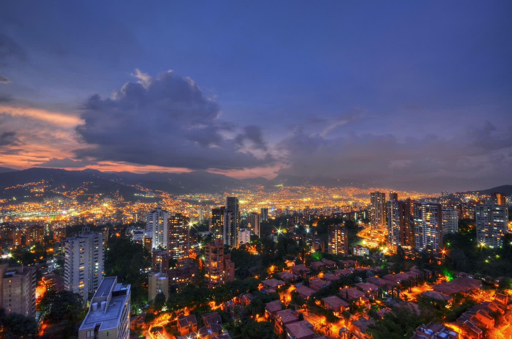
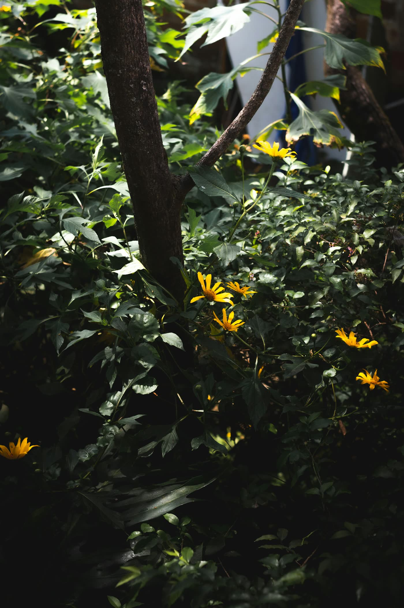

Turismo médico · Medellín
Cuídate en la ciudad de la eterna primavera
¿Vienes de otra ciudad o de otro país? Combina tu tratamiento con el Dr. Diego Carrascal y una ciudad que enamora: clima templado todo el año, montañas, cultura y la calidez paisa.
Lo esencial
Medellín en datos rápidos
Clima templado
Temperatura promedio cercana a 22 °C casi todo el año.
Aeropuerto internacional
José María Córdova, en Rionegro. Entre 45 y 60 min hasta El Poblado.
Zona del consultorio
Edificio Xerox, piso 8. Hoteles, restaurantes y cafés a pocos minutos.
Fácil de recorrer
Metro, Metrocable, taxis y apps de transporte para moverte con comodidad.
Planea tu viaje
De tu casa a tu mejor versión en 4 pasos
-
01
Escríbenos
Cuéntanos por WhatsApp qué tratamiento te interesa y en qué fechas piensas viajar.
-
02
Agenda tu valoración
Coordinamos día y hora para que aproveches al máximo tu estadía.
-
03
Tu tratamiento
Valoración médica especializada y procedimiento en el consultorio de El Poblado.
-
04
Recupérate y disfruta
El doctor te indica qué actividades puedes hacer y cuándo. Medellín te espera.
Qué hacer en Medellín
Planes para cada momento de tu viaje
Cada plan indica su nivel de esfuerzo: Suave Moderado Activo. Así eliges según tu recuperación.
Itinerario sugerido
Cinco días, a tu ritmo
Un ejemplo de cómo combinar tu tratamiento con la ciudad. Tu plan real depende del procedimiento y de las indicaciones del doctor.
Temporadas especiales
Si puedes elegir fecha, elige bien

Feria de las Flores
La fiesta más grande de la ciudad: desfile de silleteros, música y flores por todas partes.
Alumbrados navideños
Medellín se ilumina: recorridos nocturnos, ambiente familiar y temporada de celebración.
Consejos para tu visita
Viaja tranquilo
- Hospédate en El Poblado. Quedas cerca del consultorio y de la mejor oferta gastronómica.
- Deja margen en tu agenda. Algunos procedimientos requieren reposo; el doctor te dirá cuánto.
- Empaca ligero. Ropa fresca, una chaqueta para la noche, paraguas, gafas de sol y protector solar.
- Trae tu historia clínica si tienes alguna condición de salud o tomas medicamentos.
- Muévete fácil. Metro, Metrocable o apps de transporte para tus recorridos.
Preguntas frecuentes
¿Cuántos días debo quedarme en Medellín?
Depende del procedimiento. Los tratamientos no quirúrgicos suelen requerir estancias más cortas que procedimientos quirúrgicos como la alectomía. En la valoración el doctor te recomienda un tiempo para tu caso.
¿Puedo coordinar todo antes de viajar?
Sí. Escríbenos por WhatsApp con el tratamiento que te interesa y tus fechas, y coordinamos tu valoración para que aproveches tu viaje.
¿Dónde me conviene hospedarme?
En El Poblado, la zona del consultorio. Tiene amplia oferta de hoteles y apartamentos, restaurantes y cafés, y es una de las zonas preferidas por los viajeros.
¿Cómo llego desde el aeropuerto?
El Aeropuerto Internacional José María Córdova está en Rionegro. Puedes tomar taxi, transporte por aplicación o bus hacia la ciudad; el trayecto toma entre 45 y 60 minutos aproximadamente.
¿Puedo hacer turismo después de mi procedimiento?
En muchos casos sí, con algunas precauciones como el sol directo o el ejercicio intenso. El doctor te indicará qué planes son seguros para ti y desde cuándo.
¿Atienden fuera de Medellín?
Sí. También atendemos en Apartadó, en la región de Urabá.
Fotografías de Medellín y Antioquia: Unsplash.